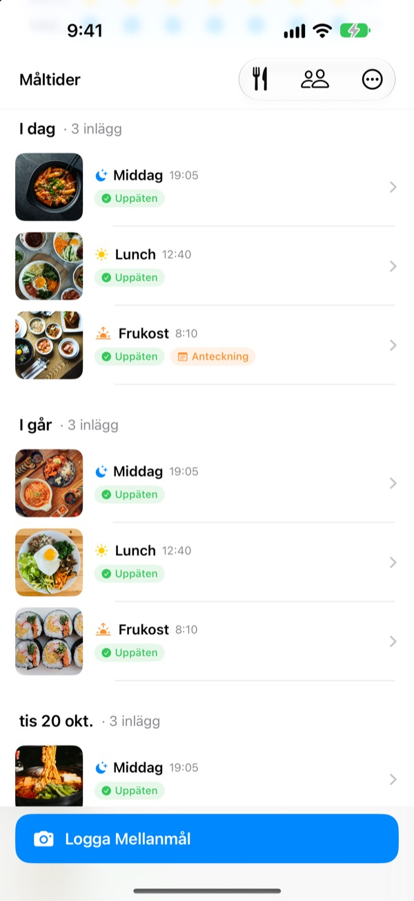
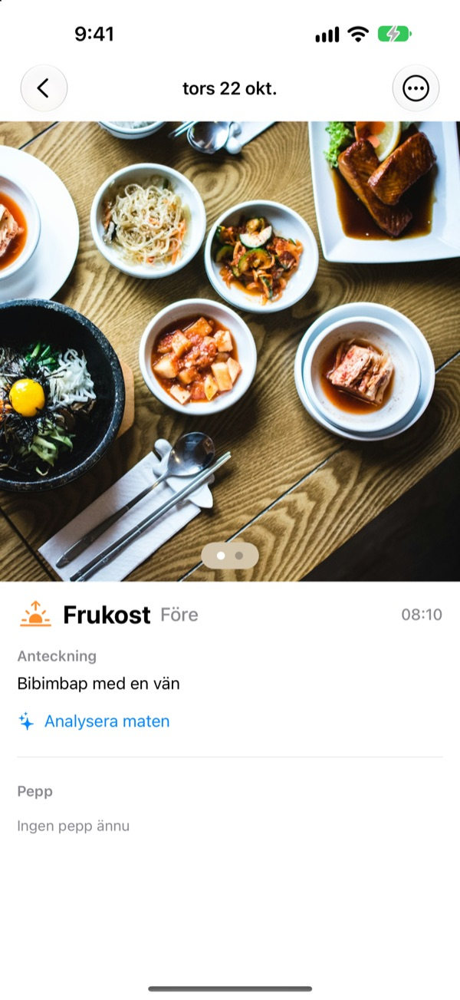
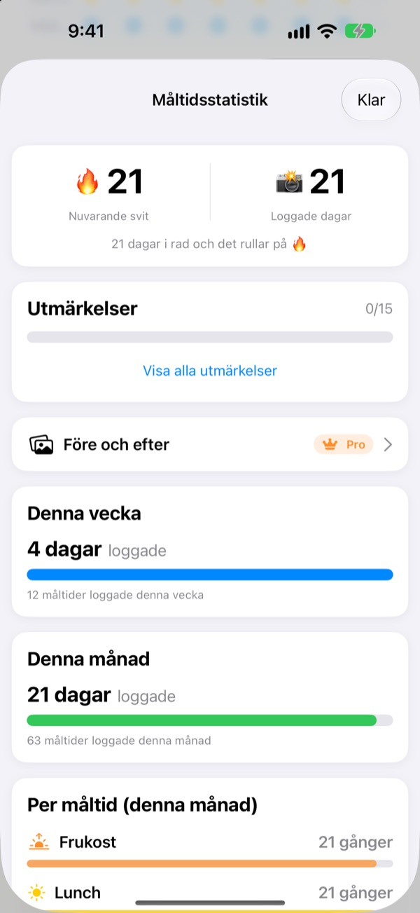
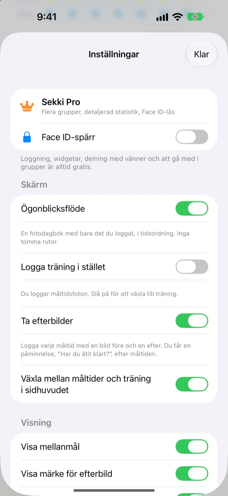

En bild innan du äter.
Så är det loggat.
Sekki ser när bilden togs och lägger den under frukost, lunch, middag eller mellanmål. Logga bara en måltid om dagen så fortsätter din svit.
Loggning, statistik, widgetar och delning med vänner är gratis.

Testa själv
Välj en tid och tryck på loggknappen. Precis som i appen visar knappen redan måltiden för den tiden.
Har du gett upp en matdagbok efter tre dagar?
Du hoppar över frukosten, glömmer middagen, och de tomma rutorna börjar irritera tills du raderar appen. Sekki har inga tomma rutor. Bara måltiderna du loggar samlas i ordning, och en enda bild räcker för att dagen ska räknas.
Ta bilden, så hamnar måltiden rätt
Utifrån tiden lägger Sekki bilden under frukost, lunch, middag eller mellanmål. Lägg till bilder före och efter, logga utan bild eller skriv en anteckning.
Maten känns igen gratis på enheten, och dina bilder lämnar aldrig telefonen.

En dagbok som aldrig krymper
En måltid om dagen håller sviten vid liv, och totalt antal loggade dagar minskar aldrig. Vecko- och månadsstatistiken visar hur många dagar och måltider du har loggat, inte en procentsats.
På vägen samlar du prestationer som 7 dagar i rad och Morgonpigg.

Bara måltiderna du väljer, utan att öppna appen
Välj vilka måltider du vill bli påmind om och anpassa tiderna efter din dag. Efter förebilden markerar du Uppäten direkt i notisen.
Logga också med Åtgärdsknappen, Siri, Genvägar eller en widget, och lägg till vänner med en kod för att heja på varandra med emojis och kommentarer.

Kom igång i tre steg
- 1
Välj dina måltider
Första gången frågar Sekki vilka måltider du vill bli påmind om. Kan ändras i Inställningar.
- 2
En bild före maten
Loggknappen visar redan måltiden för aktuell tid. Tryck, ta bilden, klart.
- 3
Tryck när du är klar
Tryck på Uppäten i notisen eller widgeten, eller lägg till en efterbild.
Logga utan att öppna appen
- Notis
- Efter förebilden markerar du Uppäten direkt i notisen
- Widget på hemskärmen
- Se dagens antal och måltiden du äter just nu, och tryck på Uppäten
- Widgetar på låsskärmen
- Rektangulär, rund och på en rad
- Åtgärdsknapp · Siri · Genvägar
- Logga Uppäten med ett tryck eller en mening
- Spara i Bilder
- Slå på det i Inställningar för separata Sekki-album för måltider och träning
- Träningsläge
- Träning hålls isär från måltider, med månadens antal pass i en blick
Knappen Uppäten i widgeten kräver iOS 17 eller senare.
Loggning är gratis. Sekki Pro går djupare.
Gratis
- Fotologgning med automatisk sortering, bilder före och efter, anteckningar
- Sviter, totalt antal dagar, vecko- och månadsstatistik, prestationer
- Påminnelser om valda måltider och Uppäten utan att öppna appen
- Widgetar, Åtgärdsknapp, Siri och Genvägar
- Dela måltider och träning med vänner, emojis och kommentarer
- Skapa en grupp, gå med i hur många som helst
- Matigenkänning på enheten
Sekki Pro
- Flera grupper för familjen, jobbet eller träningsgänget
- Jämför måltider från för några veckor sedan med i dag sida vid sida
- Se vad du äter oftast
- Lås appen med Face ID eller Touch ID
Års- eller månadsprenumeration, eller ett engångsköp för livet
Prenumerationen förnyas automatiskt om den inte sägs upp minst 24 timmar innan perioden tar slut. Säg upp när som helst i Inställningar > Apple-konto > Prenumerationer. Användarvillkor: m1zz.github.io/RoutineCamera/sv/terms.html
Vanliga frågor
Var sparas mina bilder?
På din enhet. Slår du på Spara automatiskt i Bilder i Inställningar hamnar de också i Sekki-albumen i Bilder. Så länge Dela mina måltider är på (det är på från början) laddas de upp till iCloud så att vännerna du lagt till kan se dem. Stäng av det i Inställningar > Konto och delning.
Hur lägger jag till vänner?
På skärmen Vänner delar du din kod på sex tecken och anger din väns kod. Du kan klistra in flera koder samtidigt, separerade med kommatecken.
Hur hejar jag på en vän?
Öppna en av vännens måltider och lämna en emoji eller en kort kommentar. Har vännen inte loggat något än kan du trycka på den tomma rutan för en liten knuff.
Bryts sviten om jag hoppar över en måltid?
Nej. Logga vilken måltid som helst den dagen, mellanmål inräknade, så fortsätter sviten. Även om du hoppar över en hel dag minskar inte totalt antal loggade dagar.
Jag får inga notiser.
Kontrollera i iOS-inställningar > Notiser att Sekki får skicka notiser och att enheten är inloggad på iCloud. Påminnelsetiderna ändrar du i appens inställningar.
Skickar matigenkänningen mina bilder till en server?
Nej. Den körs på enheten, så bilderna lämnar aldrig telefonen. Gratis och utan gräns.
Hur raderar jag mitt konto och mina data?
Gå till Vänner > Konto > Radera konto. Kontot och måltidsdata på servern raderas och kan inte återställas. Om något går fel, mejla oss.
Hur säger jag upp prenumerationen?
I Inställningar > Apple-konto > Prenumerationer. Den förnyas automatiskt om du inte säger upp minst 24 timmar innan perioden tar slut. Livstidsköpet betalas en gång.
Buggar, idéer eller frågor om kontot: mejla leeo@kakao.com eller skicka DM till @lee25_ios på Instagram. Vi svarar oftast inom en dag eller två.